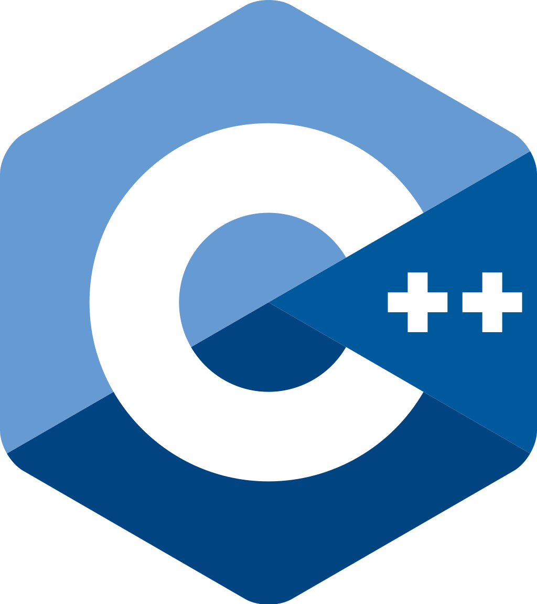

Год создания: 1983
Автор: Бьерн Страуструп
Использование: создание операционных систем, разнообразных прикладных программ,
драйверов устройств, приложений для встраиваемых систем, высокопроизводительных
серверов, а также компьютерных игр.
Плюсы
- Быстрый
- Автоматически устанавливается с ОС
- Поддерживает ООП
- Кроссплатформенность
- Один из самых популярных ЯП
Минусы
- Местами сложный синтаксис
- Сложный для обучения
- Позволяет делать небезопасные действия
- Иногда очень длинный код